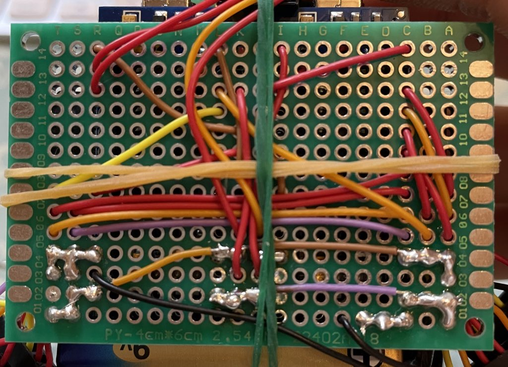
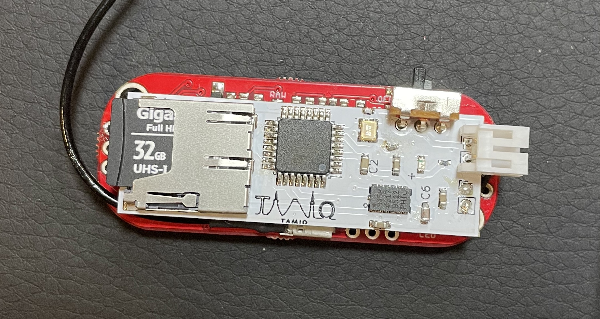

Hello!
・8月の初めに夏休み前に作成した計測装置を使用して4人に参加してもらい計測した。
・1人装着するのにも５分くらいかかりつけるのも大変だった。
・運動中に汗でずれてしまったり、外れてしまったりもした。

・精度がとても悪い。
・原因は計測したデータの質が悪かったと考えた。
・そのため加速度センサの変更と計測装置の改良に取り組んだ。

・これが夏休み以前の最も良い計測装置である。
・しかしユニバーサル基盤では限界があり、プリント基盤にする必要があると考えた。
・これはマイコンの配線だけをプリント基盤化したもの。
・とりあえず作成してみようと思い、作成したものである。
・実用的ではなかったので部品はつけなかった。
・本格的に加速度センサとSDカードも取り入れた回路で作成した。
・初めての作成だったため汚くなってしまった。
・まだスペースを省略できる可能性があった。

・基盤の色と加速度センサのチップ、配置を変更した。
・2回目だったので上手くできた。
・しかしコンデンサが小さすぎたり、部品の配置が悪かったりと不便だった。

・配置を変更し、コンデンサのサイズも大きくした。
・あとスライドスイッチをSMDに変更した。
・余計な線を無くしたため、スッキリしたし色も1番気に入っている。
・全てのプリント基盤を比較してみるとこのような感じ。
・しっかり改善と前進ができていることがわかる。
・道用先生がハンダペーストの使い方を見たいと仰っていたので、
それも踏まえてYouTubeに動画をアップしました。

・ユニバーサル基盤とプリント基盤で作成した計測装置には、これほどの違いがあります。
・プリント基盤に挑戦して正解だった。
・まだまだ課題はたくさんあります。
・実際にこの装置を使用して計測したところ、
左右のデータ数がバラバラになってしまいます。
・そのためワイヤレスなどで、計測を同時にスタートさせる
仕組みが必要です(Airpodsみたいに)。
・今後の課題は、ワイヤレス通信化することと、
バラバラでも動作分類ができるかどうか試行錯誤すること、
判別しやすいデータを計測することにあると考えています。
＃継続と挑戦を忘れない
Fin.